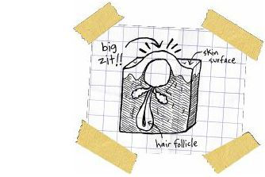
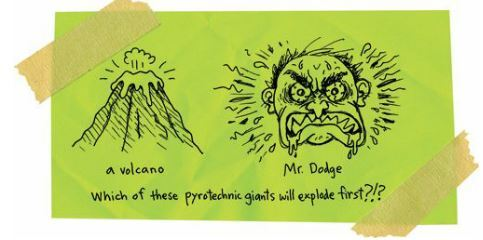
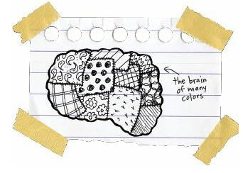
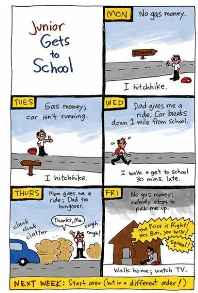
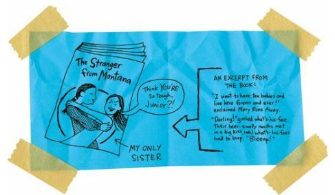
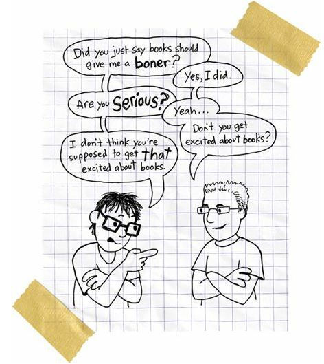

Slouching Toward Thanksgiving
I walked like a zombie through the next few weeks in Reardan.
Well, no, that’s not exactly the right description.
I mean, if I’d been walking around like a zombie, I might have been scary. So, no, I wasn’t a zombie, not at all. Because you can’t ignore a zombie. So that made me, well, it made me nothing.
Zero.
Zilch.
Nada.
In fact, if you think of everybody with a body, soul, and brain as a human, then I was the opposite of human.
It was the loneliest time of my life.
And whenever I get lonely, I grow a big zit on the end of my nose.
If things didn’t get better soon, I was going to turn into one giant walking talking zit.
A strange thing was happening to me.
Zitty and lonely, I woke up on the reservation as an Indian, and somewhere on the road to Reardan, I became something less than Indian.
And once I arrived at Reardan, I became something less than less than less than Indian.
Those white kids did not talk to me.
They barely looked at me.

Well, Roger would nod his head at me, but he didn’t socialize with me or anything. I wondered if maybe I should punch everybody in the face. Maybe they’d all pay attention to me then.
I just walked from class to class alone; I sat at lunch alone; during PE I stood in the corner of the gym and played catch with myself. Just tossed a basketball up and down, up and down, up and down.
And I know you’re thinking, “Okay, Mr. Sad Sack, how many ways are you going to tell us how depressed you were?”
And, okay, maybe I’m overstating my case. Maybe I’m exaggerating. So let me tell you a few good things that I discovered during that awful time.
First of all, I learned that I was smarter than most of those white kids.
Oh, there were a couple girls and one boy who were little Einsteins, and there was no way I’d ever be smarter than them, but I was way smarter than 99 percent of the others. And not just smart for an Indian, okay? I was smart, period.
Let me give you an example.
In geology class, the teacher, Mr. Dodge, was talking about the petrified wood forests near George, Washington, on the Columbia River, and how it was pretty amazing that wood could turn into rock.
I raised my hand.
“Yes, Arnold,” Mr. Dodge said.
He was surprised. That was the first time I’d raised my hand in his class.
“Uh, er, um,” I said.
Yeah, I was so articulate.
“Spit it out,” Dodge said.
“Well,” I said. “Petrified wood is not wood.”
My classmates stared at me. They couldn’t believe that I was contradicting a teacher.
“If it’s not wood,” Dodge said, “then why do they call it wood?”
“I don’t know,” I said. “I didn’t name the stuff. But I know how it works.”
Dodge’s face was red.
Hot red.
I’d never seen an Indian look that red. So why do they call us the redskins?
“Okay, Arnold, if you’re so smart,” Dodge said, “then tell us how it works.”
“Well, what happens is, er, when you have wood that’s buried under dirt, then minerals and stuff sort of, uh, soak into the wood. They, uh, kind of melt the wood and the glue that holds the wood together. And then the minerals sort of take the place of the wood and the glue. I mean, the minerals keep the same shape as the wood. Like, if the minerals took all the wood and glue out of a, uh, tree, then the tree would still be a tree, sort of, but it would be a tree made out of minerals. So, uh, you see, the wood has not turned into rocks. The rocks have replaced the wood.”
Dodge stared hard at me. He was dangerously angry:

“Okay, Arnold,” Dodge said. “Where did you learn this fact? On the reservation? Yes, we all know there’s so much amazing science on the reservation.”
My classmates snickered. They pointed their fingers at me and giggled. Except for one. Gordy, the class genius. He raised his hand.
“Gordy,” Dodge said, all happy and relieved and stuff. “I’m sure you can tell us the truth.”
“Uh, actually,” Gordy said, “Arnold is right about petrified wood. That’s what happens.”
Dodge suddenly went all pale. Yep. From blood red to snow white in about two seconds.
If Gordy said it was true, then it was true. And even Dodge knew that.
Mr. Dodge wasn’t even a real science teacher. That’s what happens in small schools, you know? Sometimes you don’t have enough money to hire a real science teacher. Sometimes you have an old real science teacher who retires or quits and leaves you without a replacement. And if you don’t have a real science teacher, then you pick one of the other teachers and make him the science teacher.
And that’s why small-town kids sometimes don’t know the truth about petrified wood.
“Well, isn’t that interesting,” the fake science teacher said. “Thank you for sharing that with us, Gordy.”
Yeah, that’s right.
Mr. Dodge thanked Gordy, but didn’t say another word to me.
Yep, now even the teachers were treating me like an idiot.
I shrank back into my chair and remembered when I used to be a human being.
I remember when people used to think I was smart.
I remember when people used to think my brain was useful.
Damaged by water, sure. And ready to seizure at any moment. But still useful, and maybe even a little bit beautiful and sacred and magical.
After class, I caught up to Gordy in the hallway.
“Hey, Gordy,” I said. “Thanks.”
“Thanks for what?” he said.
“Thanks for sticking up for me back there. For telling Dodge the truth.”
“I didn’t do it for you,” Gordy said. “I did it for science.”
He walked away. I stood there and waited for the rocks to replace my bones and blood.

I rode the bus home that night.
Well, no, I rode the bus to the end of the line, which was the reservation border.
And there I waited.
My dad was supposed to pick me up. But he wasn’t sure if he’d have enough gas money.
Especially if he was going to stop at the rez casino and play slot machines first.
I waited for thirty minutes.
Exactly.
Then I started walking.
Getting to school was always an adventure.
After school, I’d ride the bus to the end of the line and wait for my folks.
If they didn’t come, I’d start walking.
Hitchhiking in the opposite direction.
Somebody was usually heading back home to the rez, so I’d usually catch a ride.
Three times, I had to walk the whole way home.
Twenty-two miles.
I got blisters each time.

Anyway, after my petrified wood day, I caught a ride with a Bureau of Indian Affairs white guy and he dropped me off right in front of my house.
I walked inside and saw that my mother was crying.
I often walked inside to find my mother crying.
“What’s wrong?” I asked.
“It’s your sister,” she said.
“Did she run away again?”
“She got married.”
Wow, I was freaked. But my mother and father were absolutely freaked. Indian families stick together like Gorilla Glue, the strongest adhesive in the world. My mother and father both lived within two miles of where they were born, and my grandmother lived one mile from where she was born. Ever since the Spokane Indian Reservation was founded back in 1881, nobody in my family had ever lived anywhere else. We Spirits stay in one place. We are absolutely tribal. For good or bad, we don’t leave one another. And now, my mother and father had lost two kids to the outside world.
I think they felt like failures. Or maybe they were just lonely. Or maybe they didn’t know what they were feeling.
I didn’t know what to feel. Who could understand my sister?
After seven years of living in the basement and watching TV, after doing absolutely nothing at all, my sister decided she needed to change her life.
I guess I’d kind of shamed her.
If I was brave enough to go to Reardan, then she’d be brave enough to MARRY A FLATHEAD INDIAN AND MOVE TO MONTANA.
“Where’d she meet this guy?” I asked my mother.
“At the casino,” she said. “Your sister said he was a good poker player. I guess he travels to all the Indian casinos in the country.”
“She married him because he plays cards?”
“She said he wasn’t afraid to gamble everything, and that’s the kind of man she wanted to spend her life with.”
I couldn’t believe it. My sister married a guy for a damn silly reason. But I suppose people often get married for damn silly reasons.
“Is he good-looking?” I asked.
“He’s actually kind of ugly,” my mother said. “He has this hook nose and his eyes are way different sizes.”
Damn, my sister had married a lopsided, eagle-nosed, nomadic poker player.
It made me feel smaller.
I thought I was pretty tough.
But I’d just have to dodge dirty looks from white kids while my sister would be dodging gunfire in beautiful Montana. Those Montana Indians were so tough that white people were scared of them.
Can you imagine a place where white people are scared of Indians and not the other way around?
That’s Montana.
And my sister had married one of those crazy Indians.
She didn’t even tell our parents or grandmother or me before she left. She called Mom from St. Ignatius, Montana, on the Flathead Indian Reservation, and said, “Hey, Mom, I’m a married woman now. I want to have ten babies and live here forever and ever.”
How weird is that? It’s almost romantic.
And then I realized that my sister was trying to LIVE a romance novel.
Man, that takes courage and imagination. Well, it also took some degree of mental illness, too, but I was suddenly happy for her.
And a little scared.

Well, a lot scared.
She was trying to live out her dream. We should have all been delirious that she’d moved out of the basement. We’d been trying to get her out of there for years. Of course, my mother and father would have been happy if she’d just gotten a part-time job at the post office or trading post, and maybe just moved into an upstairs bedroom in our house.
But I just kept thinking that my sister’s spirit hadn’t been killed. She hadn’t given up. This reservation had tried to suffocate her, had kept her trapped in a basement, and now she was out roaming the huge grassy fields of Montana.
How cool!
I felt inspired.
Of course, my parents and grandmother were in shock. They thought my sister and I were going absolutely crazy.
But I thought we were being warriors, you know?
And a warrior isn’t afraid of confrontation.
So I went to school the next day and walked right up to Gordy the Genius White Boy.
“Gordy,” I said. “I need to talk to you.”
“I don’t have time,” he said. “Mr. Orcutt and I have to debug some PCs. Don’t you hate PCs? They are sickly and fragile and vulnerable to viruses. PCs are like French people living during the bubonic plague.”
Wow, and people thought I was a freak.
“I much prefer Macs, don’t you?” he asked. “They’re so poetic.”
This guy was in love with computers. I wondered if he was secretly writing a romance about a skinny, white boy genius who was having sex with a half-breed Apple computer.
“Computers are computers,” I said. “One or the other, it’s all the same.”
Gordy sighed.
“So, Mr. Spirit,” he said. “Are you going to bore me with your tautologies all day or are you going to actually say something?”
Tautologies? What the heck were tautologies? I couldn’t ask Gordy because then he’d know I was an illiterate Indian idiot.
“You don’t know what a tautology is, do you?” he asked.
“Yes, I do,” I said. “Really, I do. Completely, I do.”
“You’re lying.”
“No, I’m not.”
“Yes, you are.”
“How can you tell?”
“Because your eyes dilated, your breathing rate increased a little bit, and you started to sweat.”
Okay, so Gordy was a human lie detector machine, too.
“All right, I lied,” I said. “What is a tautology?”
Gordy sighed again.
I HATED THAT SIGH! I WANTED TO PUNCH THAT SIGH IN THE FACE!
“A tautology is a repetition of the same sense in different words,” he said.
“Oh,” I said.
What the hell was he talking about?
“It’s a redundancy.”
“Oh, you mean, redundant, like saying the same thing over and over but in different ways?”
“Yes.”
“Oh, so if I said something like, ‘Gordy is a dick without ears and an ear without a dick,’ then that would be a tautology.”
Gordy smiled.
“That’s not exactly a tautology, but it is funny. You have a singular wit.”
I laughed.
Gordy laughed, too. But then he realized that I wasn’t laughing WITH him. I was laughing AT him.
“What’s so funny?” he asked.
“I can’t believe you said ‘singular wit.’ That’s sounds like fricking British or something.”
“Well, I am a bit of an Anglophile.”
“An Anglophile? What’s an Angophile?”
“It’s someone who loves Mother England.”
God, this kid was an eighty-year-old literature professor trapped in the body of a fifteen-year-old farm boy.
“Listen, Gordy,” I said. “I know you’re a genius and all. But you are one weird dude.”
“I’m quite aware of my differences. I wouldn’t classify them as weird.”
“Don’t get me wrong. I think weird is great. I mean, if you look at all the great people in history—Einstein, Michelangelo, Emily Dickinson—then you’re looking at a bunch of weird people.”
“I’m going to be late for class,” Gordy said. “You’re going to be late for class. Perhaps you should, as they say, cut to the chase.”
I looked at Gordy. He was a big kid, actually, strong from bucking bales and driving trucks. He was probably the strongest geek in the world.
“I want to be your friend,” I said.
“Excuse me?” he asked.
“I want us to be friends,” I said.
Gordy stepped back.
“I assure you,” he said. “I am not a homosexual.”
“Oh, no,” I said. “I don’t want to be friends that way. I just meant regular friends. I mean, you and I, we have a lot in common.”
Gordy studied me now.
I was an Indian kid from the reservation. I was lonely and sad and isolated and terrified.
Just like Gordy.
And so we did become friends. Not the best of friends. Not like Rowdy and me. We didn’t share secrets. Or dreams.
No, we studied together.
Gordy taught me how to study.
Best of all, he taught me how to read.
“Listen,” he said one afternoon in the library. “You have to read a book three times before you know it. The first time you read it for the story. The plot. The movement from scene to scene that gives the book its momentum, its rhythm. It’s like riding a raft down a river. You’re just paying attention to the currents. Do you understand that?”
“Not at all,” I said.
“Yes, you do,” he said.
“Okay, I do,” I said. I really didn’t, but Gordy believed in me. He wouldn’t let me give up.
“The second time you read a book, you read it for its history. For its knowledge of history. You think about the meaning of each word, and where that word came from. I mean, you read a novel that has the word ‘spam’ in it, and you know where that word comes from, right?”
“Spam is junk e-mail,” I said.
“Yes, that’s what it is, but who invented the word, who first used it, and how has the meaning of the word changed since it was first used?”
“I don’t know,” I said.
“Well, you have to look all that up. If you don’t treat each word that seriously then you’re not treating the novel seriously.”
I thought about my sister in Montana. Maybe romance novels were absolutely serious business. My sister certainly thought they were. I suddenly understood that if every moment of a book should be taken seriously, then every moment of a life should be taken seriously as well.
“I draw cartoons,” I said.
“What’s your point?” Gordy asked.
“I take them seriously. I use them to understand the world. I use them to make fun of the world. To make fun of people. And sometimes I draw people because they’re my friends and family. And I want to honor them.”
“So you take your cartoons as seriously as you take books?”
“Yeah, I do,” I said. “That’s kind of pathetic, isn’t it?”
“No, not at all,” Gordy said. “If you’re good at it, and you love it, and it helps you navigate the river of the world, then it can’t be wrong.”
Wow, this dude was a poet. My cartoons weren’t just good for giggles; they were also good for poetry. Funny poetry, but poetry nonetheless. It was seriously funny stuff.
“But don’t take anything too seriously, either,” Gordy said.
The little dork could read minds, too. He was like some kind of Star Wars alien creature with invisible tentacles that sucked your thoughts out of your brain.
“You read a book for the story, for each of its words,” Gordy said, “and you draw your cartoons for the story, for each of the words and images. And, yeah, you need to take that seriously, but you should also read and draw because really good books and cartoons give you a boner.”
I was shocked:

“You should get a boner! You have to get a boner!” Gordy shouted. “Come on!”
We ran into the Reardan High School Library.
“Look at all these books,” he said.
“There aren’t that many,” I said. It was a small library in a small high school in a small town.
“There are three thousand four hundred and twelve books here,” Gordy said. “I know that because I counted them.”
“Okay, now you’re officially a freak,” I said.
“Yes, it’s a small library. It’s a tiny one. But if you read one of these books a day, it would still take you almost ten years to finish.”
“What’s your point?”
“The world, even the smallest parts of it, is filled with things you don’t know.”
Wow. That was a huge idea.
Any town, even one as small as Reardan, was a place of mystery. And that meant that Wellpinit, that smaller, Indian town, was also a place of mystery.
“Okay, so it’s like each of these books is a mystery. Every book is a mystery. And if you read all the books ever written, it’s like you’ve read one giant mystery. And no matter how much you learn, you just keep on learning there is so much more you need to learn.”
“Yes, yes, yes, yes,” Gordy said. “Now doesn’t that give you a boner?”
“I am rock hard,” I said.
Gordy blushed.
“Well, I don’t mean boner in the sexual sense,” Gordy said. “I don’t think you should run through life with a real erect penis. But you should approach each book—you should approach life—with the real possibility that you might get a metaphorical boner at any point.”
“A metaphorical boner!” I shouted. “What the heck is a metaphorical boner?”
Gordy laughed.
“When I say boner, I really mean joy,” he said.
“Then why didn’t you say joy? You didn’t have to say boner. Whenever I think about boners, I get confused.”
“Boner is funnier. And more joyful.”
Gordy and I laughed.
He was an extremely weird dude. But he was the smartest person I’d ever known. He would always be the smartest person I’d ever known.
And he certainly helped me through school. He not only tutored me and challenged me, but he made me realize that hard work—that the act of finishing, of completing, of accomplishing a task—is joyous.
In Wellpinit, I was a freak because I loved books.
In Reardan, I was a joyous freak.
And my sister, she was a traveling freak.
We were the freakiest brother and sister in history.